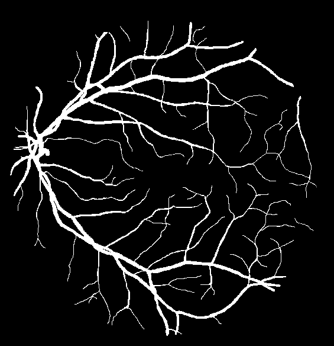

Other on-line image processing and computer vision applications are available at http://matlabserver.cs.rug.nl.
On this site you can: automatically detect vascular bifurcations in segmented retinal images with some predefined COSFIRE filters, visualize the output of the filters rendered as a gray-level image, visualize the detected vascular bifurcations as encircled features in the input image, use the slider below the images to control the output of the COSFIRE filters: the number of detected features decreases with an increasing threshold value (i.e. moving the slider to the right), and download the output image with the detected features encircled as well as the coordinates of these detected features. You can select a retinal image taken from the DRIVE data set or upload your own binarized retinal image (in gif format).| |
||||||||||||||
| It takes you about 3min, please wait ... | ||||||||||||||
|
|
||||||||||||||
| Input original image: | Input segmented image: | Output image: | ||||||||||||
| Invert output | ||||||||||||||
|  |
|
|||||||||||||
| Threshold | |||||
| |
Reference
[1] J.J. Staal, M.D. Abramoff, M. Niemeijer, M.A. Viergever, B. van Ginneken, "Ridge based vessel segmentation in color images of the retina", IEEE Transactions on Medical Imaging, 2004, vol. 23, pp. 501-509.